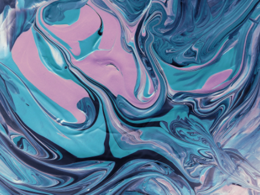
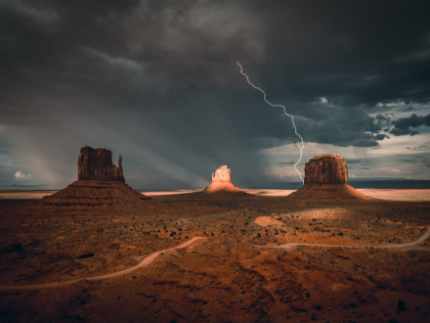
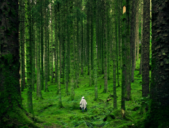
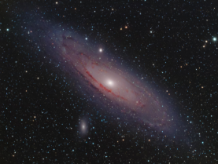
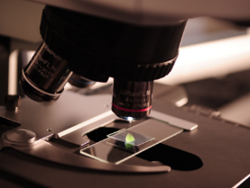
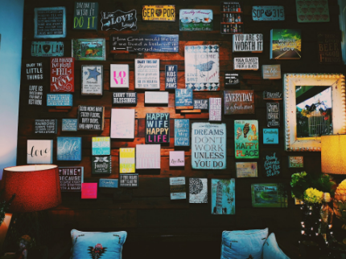
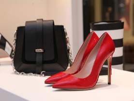

В конце февраля столичные галереи представили масштабную экспозицию, посвященную технике Fluid Art. Посетители могут увидеть уникальные полотна, созданные путем смешивания акриловых красок, которые образуют гипнотические узоры, напоминающие срез мрамора или космические туманности.

Редкое сочетание погодных условий вызвало мощную грозовую активность над засушливыми плато Аризоны в конце февраля. Фотографам удалось запечатлеть драматичные удары молний, освещающие знаменитые скалы-останцы на фоне тяжелых штормовых облаков.

В январском выпуске эксперты выделили «тихие походы» и лесную терапию как главный тренд года для борьбы со стрессом. Особое внимание уделено маршрутам в Африке и Южной Корее, где путешественники могут полностью отключиться от цифрового мира и восстановить силы в окружении древних деревьев.
Таиланд и страны Карибского бассейна остаются лидерами зимнего сезона, предлагая идеальные условия для отдыха на побережье. Эксперты отмечают рост интереса к «секретным» курортам Юго-Восточной Азии, где можно насладиться тропической природой вдали от массового скопления людей.
В январе аналитики книжного рынка предупредили о грядущем подорожании печатных изданий на 15% из-за роста затрат на логистику и материалы. Издатели связывают это с глобальными экономическими изменениями и необходимостью инвестиций в качественное оформление бумажных книг.

Астрономы зафиксировали редкое событие в галактике Андромеды: массивная звезда исчезла без взрыва сверхновой и напрямую превратилась в чёрную дыру. Наблюдения показали, что звезда сначала резко увеличила яркость, а затем полностью пропала, оставив вокруг облако пыли и газа. Открытие помогает понять, как именно формируются чёрные дыры во Вселенной.

Исследователи из Стэнфордского университета разработали новый тип микроскопа, который позволяет наблюдать структуры внутри живых клеток с разрешением около 120 нанометров без использования флуоресцентных меток. Технология объединяет несколько методов микроскопии и позволяет долго наблюдать за тем, как клеточные структуры движутся и взаимодействуют, что может ускорить разработку лекарств и изучение болезней.
Эксперты проанализировали ключевые изменения в поведении путешественников, выделив рост интереса к «тихому отдыху» и поиску аутентичных локаций вдали от массовых потоков. В 2026 году путешественники всё чаще выбирают направления, где природа и культурное наследие сочетаются с возможностью цифрового детокса.

Создание мудборда или «доски мечты» — это не просто творческий процесс, а мощный инструмент психологии для фокусировки на личных ценностях и планах. Узнайте, как правильно скомбинировать изображения и вдохновляющие цитаты, чтобы превратить ваши абстрактные мечты в четкие и достижимые цели на 2026 год.

Современные бренды объединяют дизайн и этичное производство, создавая аксессуары, которые подчеркивают статус и индивидуальность. Эксперты разбирают, почему яркие акценты в гардеробе — от алых лодочек до структурированных сумок — остаются ключевым трендом делового стиля.